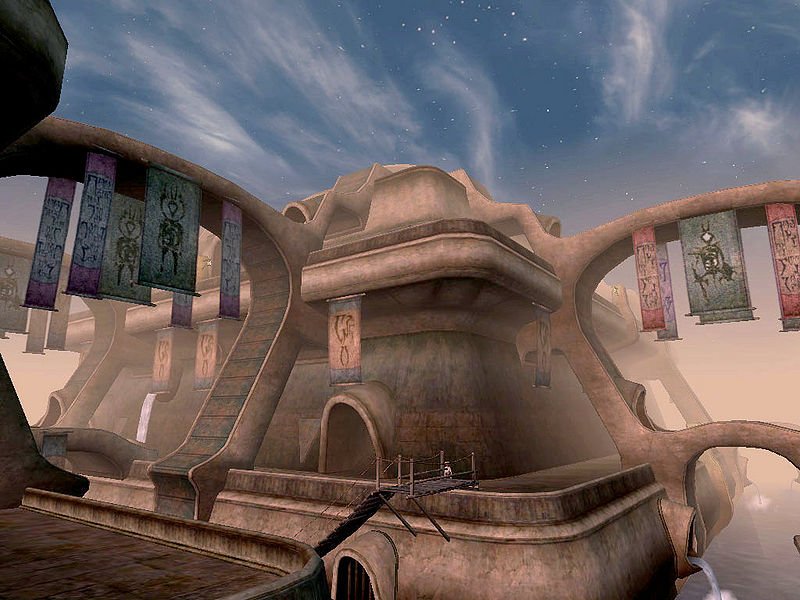
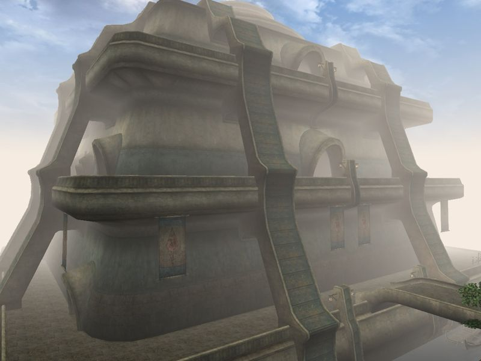
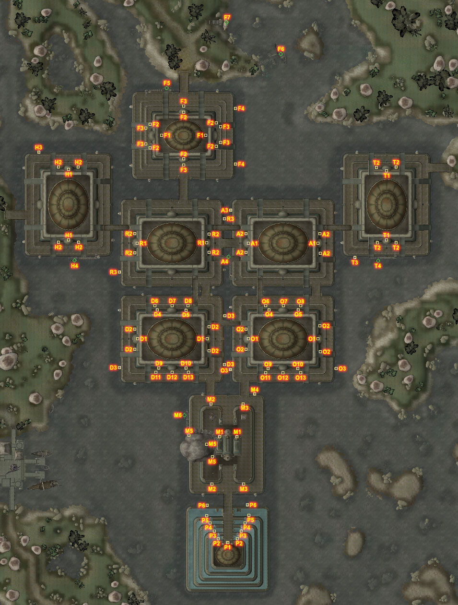

Morrowind:Vivec
Morrowind: Places
| Vivec |
| Alignment: Various |
| Region: Ascadian Isles |
|
Transport:
Almsivi Intervention:
Divine Intervention:
Guild Guide:
Silt Strider:
Boat:
|
Services:
|
 |
 View of the High Fane and Ministry of Truth |
|  Arena Canton |
|  The main land entrance to Vivec, the 'Foreign Quarter' canton |
"Finally the bones of Horde Mountain landed and became the foundation stones for the City of Swords, which Vivec named after his own sigil, and the net fell across it all and between, or became as bridges between bones, and since its segments had been touched by his holy wisdom they became the most perfect of all city streets in the known worlds." —36 Lessons of Vivec
Vivec City (often shortened to simply Vivec), named after the god of the same name, is the largest city in Vvardenfell and is situated on its southern coast in Norvayn Bay with Baar Dau floating above. The city is a collection of nine artificial islands; each island is a separate district or canton and is made up of a large multi-tiered building the size of a small town. The many bridges and walkways between these cantons create a maze that could be intimidating for new arrivals. Water is the dominant element in the architecture, present even inside. The entire city of Vivec is considered a holy place, as it is home to the Living God Vivec himself. The city is policed by special guards drawn from the militant order of the Temple, the Ordinators.
Most cantons are generally built of four tiers. The lowest, only accessible from drainage grates or trapdoors, is the Underworks, or the canton's sewer. The Underworks are located on the water-line, and are a nest for criminals, rats, and other undesirables, as Ordinators never venture into them. Above the Underworks, at the level of the main walkways and canals, are the Canalworks, where tombs, homeless paupers, storage rooms, and a few small shops can occasionally be found. The Canalworks of a canton are generally only accessible from the upper levels, or via trapdoor from the Underworks. Above the Canalworks are the Waistworks, filled with shops, clubs, temples, and residences. The top of a canton contains a large domed courtyard known as the Plaza, with standalone buildings rather than doors built into corridor walls. Canton plazas are filled with manor-houses and fine shops, and can usually only be accessed through large doors from the exterior. All of the space within a canton has to be leased from the Temple, and the only Guards allowed to police the area are Ordinators.
Getting There and Around
Bridges connect with the mainland between the Ebonheart peninsula and the Hlaalu Compound, between the north bay region and the Foreign Quarter, and between the east bay region and the Telvanni Compound. Roads lead from the Hlaalu Compound bridge south to Ebonheart and north to Seyda Neen, from the Foreign Quarter bridge west towards Seyda Neen, north towards Suran and the Ascadian Isles, and east towards Molag Mar. Roads from the Telvanni Compound bridge are useful mostly for travelers to Molag Mar.
The North Landing is a fast travel hub located just across the bridge north of the Foreign Quarter. The Silt Strider port here offers fast-travel to Balmora, Molag Mar, Seyda Neen and Suran. A small harbor with connections to Ebonheart, Hla Oad, Molag Mar and Tel Branora is located here as well.
Located on the Plaza level of the Foreign Quarter, Flacassia Fauseius serves Vivec's Mages Guild as a guild guide, and provides transport from the city to the other branches of the guild. Small boats called gondolas, each operated by a gondolier, provide a means of cheap, short distance fast-travel between the cantons.
Map of Vivec
